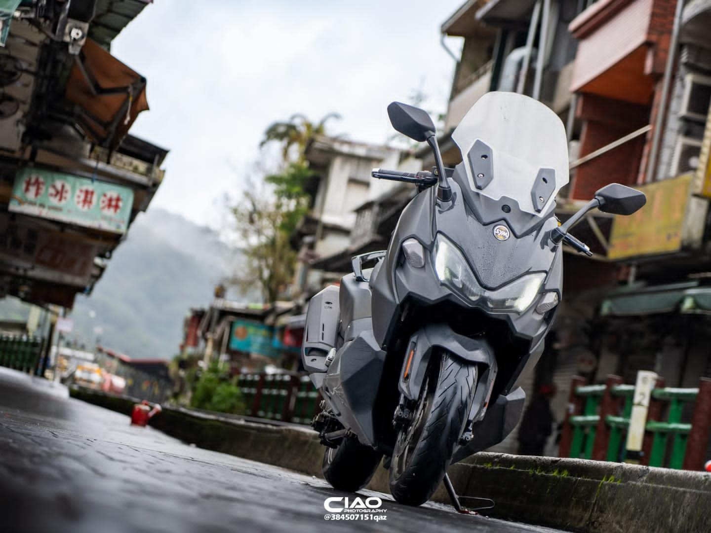
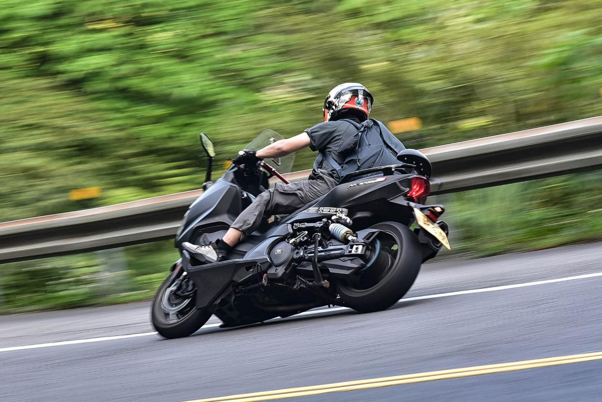
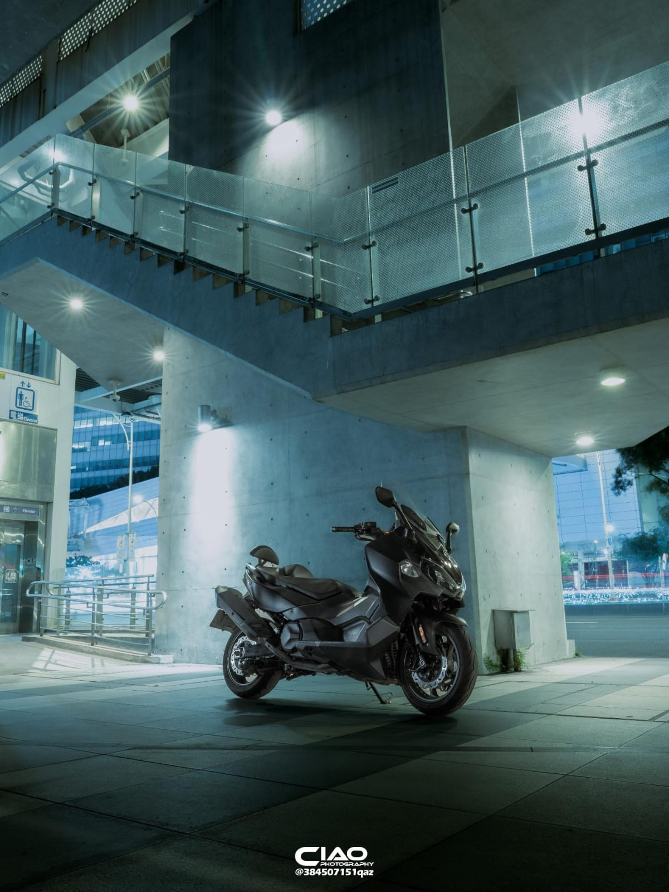

La TL465 de Ciao: una motocicleta entre las calles de Taiwán
ML- En un país donde las motos forman parte de la vida diaria, la TL465 destaca por su estabilidad, potencia y presencia en carretera.28 mayo 2026 | 17:00 pm

En Taiwán, las motocicletas forman parte de la vida cotidiana. Es normal ver miles de motos recorriendo las calles, estacionadas frente a restaurantes, universidades y edificios, convirtiéndose en uno de los medios de transporte más importantes del país.
Dentro de esa enorme cultura motociclista aparece la TL465 de Ciao, una moto que destaca por ofrecer una conducción estable, cómoda y con un carácter mucho más deportivo que el de las motocicletas urbanas tradicionales.
Aunque no es la opción más flexible para moverse entre el tráfico de la ciudad, su comportamiento a altas velocidades y la sensación de estabilidad hacen que se convierta en una máquina especialmente disfrutable para quienes buscan rendimiento y presencia en carretera.

Una conducción estable y cómoda
Uno de los aspectos que más destaca Ciao de su TL465 es la sensación de estabilidad a altas velocidades. La motocicleta ofrece una conducción firme y cómoda, especialmente en recorridos abiertos donde puede aprovechar mejor su rendimiento.
El precio de mantener una motocicleta de alto rendimiento
Sin embargo, no todo gira alrededor de la velocidad y la comodidad. Ciao comenta que uno de los aspectos menos favorables de la TL465 es el costo de sus consumibles y mantenimiento. Componentes como neumáticos, frenos y otras piezas de desgaste pueden resultar considerablemente más costosos en comparación con motocicletas urbanas más pequeñas.
Esto se debe principalmente al enfoque deportivo y al nivel de rendimiento que ofrece la motocicleta, características que también exigen un mayor cuidado mecánico y una inversión constante para mantener su comportamiento y desempeño al máximo nivel.
Ficha técnica — SYM TL465
Motor: Bicilíndrico en paralelo, refrigeración líquida
Cilindrada: 465 cc
Potencia: 40 CV a 7.000 rpm
Torque: 41,2 Nm a 5.000 rpm
Transmisión: CVT automática
Sistema de frenos: ABS con doble disco delantero
Suspensión delantera: Horquilla invertida
Peso: 211 kg
Capacidad del tanque: 13 litros

La impresión que deja la TL465
En lo personal, nunca había visto una motocicleta como la TL465 en mi país, y eso es justamente una de las cosas que más llaman la atención de este modelo. Su diseño deportivo, su tamaño y la presencia que transmite hacen que destaque inmediatamente entre las motos tradicionales.
Sin duda, manejar una motocicleta así por las calles de Taiwán debe ser una experiencia bastante diferente e interesante. ¿Ustedes manejarían una de estas?